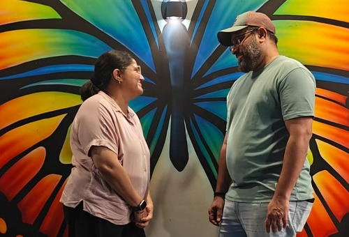
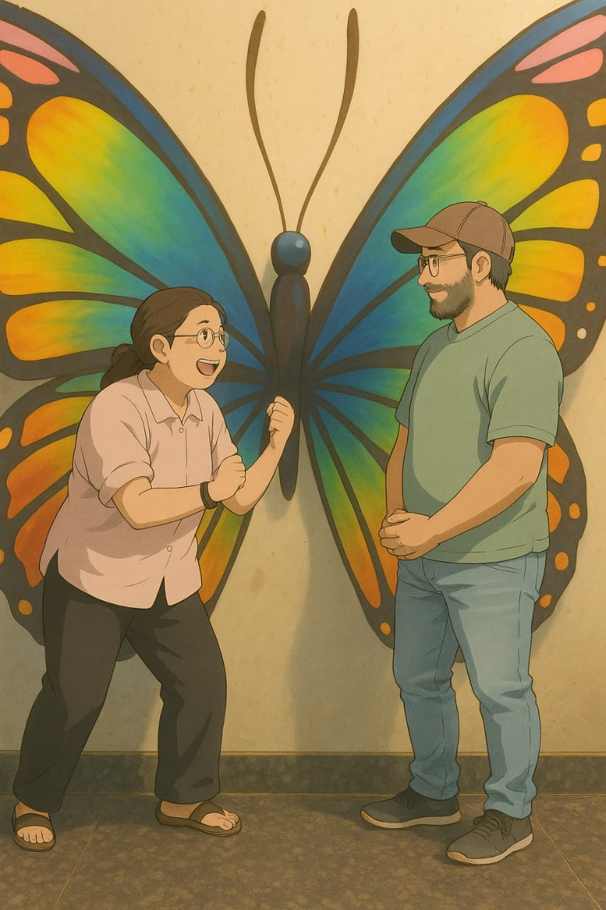

Glen Brother & Madhurima Sister
May your love keep growing in the grace of Jesus.
Happy Wedding Anniversary to Glen Brother & Madhurima Sister.
May Jesus remain at the heart of your love story, today and in every season ahead.
A little space to celebrate the beautiful story God is writing through you. Add your two favourite photographs below — they stay in this page on your device and are not uploaded anywhere.

May your love keep growing in the grace of Jesus.

May your home always be filled with faith, peace and laughter.
Dear Glen Brother and Madhurima Sister,
Wishing you both a very blessed and joyful wedding anniversary! ❤️
Today, I thank the Lord not only for the gift of your marriage, but also for the blessing you both are to our church family. Your lives and your service are a reminder that leadership is not only about what we do in front of people, but also about the faith, humility, love, and consistency with which we walk with Jesus every day.
It is a beautiful thing when a husband and wife build their life together with Christ at the centre. Your journey can encourage others to keep choosing love, to serve with sincere hearts, and to trust God through every season. May your marriage continue to be a living testimony of His faithfulness — not because every day is perfect, but because His grace is present in every season.
My prayer is that your home will always be a place of peace, prayer, laughter, wisdom, and the presence of God. May the Lord strengthen your bond, deepen your friendship, keep your hearts tender toward one another, and give you grace to listen, forgive, encourage, and stand together. May He protect the unity of your marriage and renew your strength whenever the responsibilities of life and ministry feel heavy.
Ecclesiastes 4:12 reminds us that “a cord of three strands is not quickly broken.” May Jesus always remain that central strand in your marriage — guiding your decisions, shaping your dreams, and holding you steady through every joy and challenge. And as Colossians 3:14 teaches, may love bind everything together in perfect unity.
As you continue serving the Lord and caring for His people, may He pour fresh grace into your lives. May your love for one another strengthen your service, may your service flow from your love for Christ, and may the fruit of your lives bring glory to His name. I pray that the years ahead hold many answered prayers, new strength, deeper faith, and precious memories together.
Thank you for being a blessing and an inspiration to our church. May the Lord bless you and keep you; may He make His face shine upon you and give you peace (Numbers 6:24–26). May your marriage grow stronger in Him with every passing year.
With love, honour, and prayers,
Sujal
Dear Glen Brother and Madhurima Sister,
On a personal note, I want you to know that you both mean a lot to me. The way you love the Lord and serve Him inspires me to grow in my own faith, to know Jesus more deeply, and to keep learning how to love God with a sincere heart. I’m grateful that God has placed people like you in my life, whose example encourages me to keep growing in Him.
You feel like family to me — like a blessing from God and, in many ways, like parents whose faith and care I can look up to. I may not always know how to express it, but I truly love and appreciate you both. My prayer is that as I continue my journey with Jesus, I will grow in the faith, love, and character that I see reflected in your lives.
With love, as your son in Christ,
Sujal
“But as for me and my household, we will serve the Lord.”
May your home always be filled with the presence of Jesus, and may your faith continue to inspire everyone God brings into your lives.
May these promises remind you that the Lord is present in every part of married life.
May your love be patient and kind, choosing humility and hope even when life is not easy.
May the Lord be the foundation of your home, and may everything you build be rooted in Him.
May the Lord bless you and keep you; may His face shine upon you and give you peace.
May you encourage one another, help one another rise, and remain united through every season.
May you trust in the Lord with all your hearts and acknowledge Him in every path you take.
May the peace of Christ rule in your hearts, and may everything you do be done in His name.
Choose the season that feels closest to your heart. Each card offers a Scripture reference, a reminder, and a short prayer for the two of you.
Heavenly Father, thank You for Glen Brother and Madhurima Sister. Keep their marriage strong in Your love. Teach them to be quick to listen, gentle in their words, generous in forgiveness, and faithful in prayer. Fill their home with Your presence, guide their decisions, renew their strength in every demanding season, and let their life together bring glory to Jesus. May Your peace guard their hearts, Your wisdom direct their steps, and Your grace be new to them every morning. In Jesus’ name, Amen.